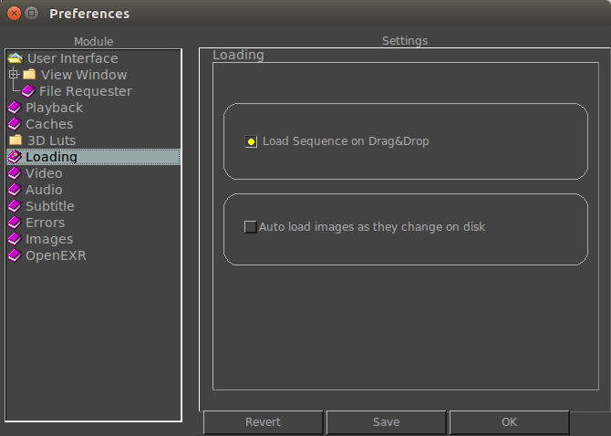

|  |
When this option is on, any image that is dragged and dropped in the main mrViewer window will be treated as a sequence and the full sequence will be loaded. If this option is off, only a single frame will be loaded. When this option is on, any timecode found in the movie or in the image file (OpenEXR) is interpreted and the frame will be an offset of the start timecode value. When this option is on, mrViewer will monitor the image on disk and will update it as soon as it sees a change in it. |